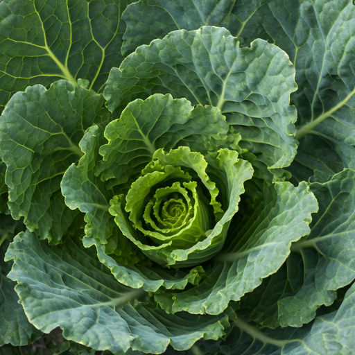
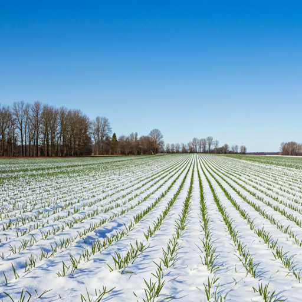

一年四个阶段，重点内容一目了然
从春季整地到冬季维护，把常见农业知识拆成清晰的主题模块，便于按农时查看、按问题检索，也方便后续持续补充新内容。
季节知识导航
围绕播种准备、日常巡田、采收复盘和冬季维护，整理适合持续查阅的知识内容， 让农业学习更像一套可随时回看的线上资料库。
从春季整地到冬季维护，把常见农业知识拆成清晰的主题模块，便于按农时查看、按问题检索，也方便后续持续补充新内容。

农事日历
根据季节查看播种、管理、采收与维护节点，方便把日常知识查询和阶段性复盘放到同一页里完成。

春季重点
春季适合完成整地、选种和保水安排，为后续生长建立更稳定的起点。
让土壤更疏松透气，减少播种前阻力，让幼苗出芽更平稳。
选择适合当地环境的品种，能够明显降低后续管理难度。
结合覆盖和浇水节奏保持土壤湿度，利于后续发芽与缓苗。
夏季重点
高温阶段更强调除草、合理灌溉和持续观察，让管理动作更细致。
及时清理杂草，减少与作物竞争养分与空间，保持地块整洁。
在高温时段注意浇水与遮阴方式，降低蒸发和叶片灼伤风险。
持续记录叶色和长势变化，便于快速判断管理方向是否需要调整。
秋季重点
采收期适合同时完成仓储整理和结果记录，为下一阶段积累更可靠的参考。
根据成熟度安排批次，提高效率，也方便后续成果展示和梳理。
提前清洁存放空间并保持通风，帮助农产品更稳定地进入保存阶段。
把过程和结果记录下来，为后续计划和知识整理提供材料。

冬季重点
冬季生产节奏放缓，更适合集中做设备保养、知识补充和下一轮规划。
对常用工具和设施进行检修保养，为下一季生产提前做好准备。
集中学习农业科技与管理方法，让下一轮安排更科学、更顺畅。
提前梳理新的阶段目标和重点任务，让后续执行更有方向感。
延伸资源
这里可以承接年度手册下载、专题资料汇总和线下培训内容，方便把知识页变成持续更新的资料入口。
回到季节内容节水灌溉可以减少水资源浪费，提高灌溉效率，也能让田间管理更加稳定和精细。
把天气、长势和阶段变化记录下来，有助于总结经验，让下一轮安排更有依据，也更方便整理成长期资料。
它能够把纯阅读型知识转成可执行的阶段安排，让站点内容更有实际使用价值。